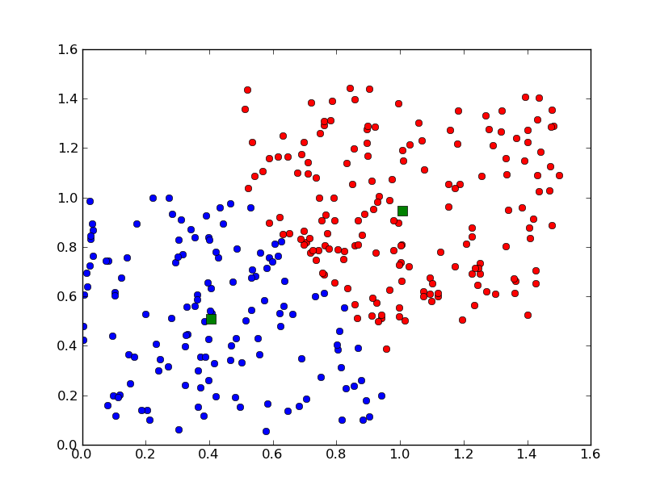
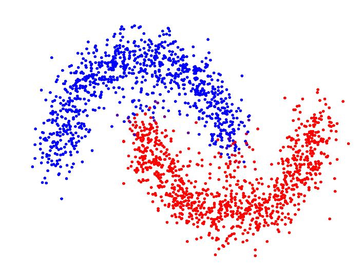
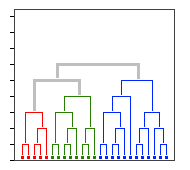
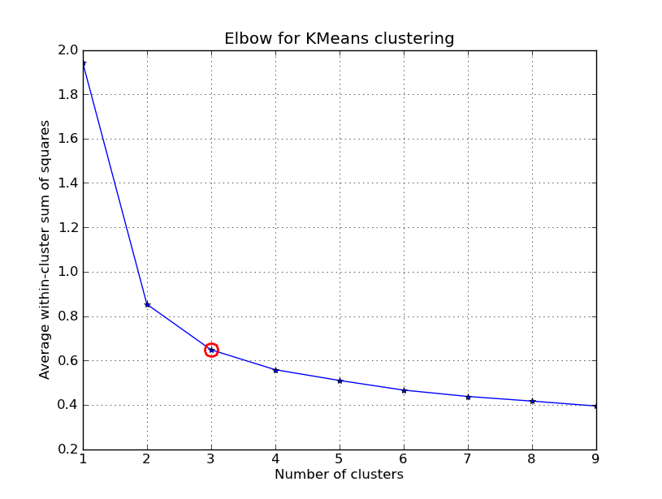

Clustering
Mainly K-means

Firstly talk about the difference between clustering and classfication:
Generally speaking, clustering is grouping data points with respect to a similarity metric, while classification is grouping datapoints with respect to a target.
There are basically 3 types of clustering: Partitioning, Density-based and Hierarchical (as the diagrams shown in the same order below). But today I'm only introducing k-means, a kind of Partitioning, which is the most basic clustering method.



Steps of k-means are as below (given k):
- Randomly choose k data points to serve as initial centroids.
- Until there's no change in cluster assignments (reach max iteration), do:
(i) (re)assign each adta point to the centroid to which the data point is closest in euclidiean space.
(ii) update the cluster centroid values to represent means of the data points of each cluster.
- Return the membership of each data point.
Now introduce the metric (silhouette coefficient) used to evaluate the result of clustering:
Assume we have data point o in cluster $C_i$, then we first define:
$$a(o)=\frac{\sum_{o'\in C_i,o'\neq o}{dist(o,o')}}{|C_i|-1}$$
Which is the average distance from the point o to the other data points in the same cluster.
Then we define:
$$b(o)=\min_{Cj,1\leq j\leq k,j\neq i}{\frac{\sum_{o'\in C_j}{dist(o,o')}}{|C_j|}}$$
Which denotes the min distance from o to the data points in other clusters.
Then finally we have silhouette coefficient:
$$s(o)=\frac{b(o)-a(o)}{max\{a(o), b(o)\}}$$
Note that the silhouette coefficient of the whole cluster is the average of silhouette coefficients of all data points. And because it's quite sensitive to the scale of the feature (the scales of different dimension may vary considerably), we have to normalize the data first before clustering.
The range of s(o) is (-1,1).
In the best cases, s(o) is close to 1 (a(o)$\rightarrow$0, b(o)$\rightarrow\infty$), in the worst cases, s(o) is close to -1 (a(o)$\rightarrow\infty$, b(o)$\rightarrow$0).
Then finally in this article, I'll introduce the Elbow Method which can be used to select the best "k" for clustering.
At first, see the definition of SSE (sum of square error):
$$SSE=\sum_{i=1}^{k}{\sum_{p\in C_i}{dist(p, centroid_i)^2}}$$
Here we can see that the SSE can measure how "compact" the clustering is (the closer that points are to the centroids, the smaller SSE we can get). But SSE will definitely keep decreasing with increasing of k. When k equals the number of points, the SSE reachs its minimum, however, it can't be the best k because it's too "detailed". We expect to have the k being not too large (less categories, more generality), but also SSE being not too large. It's kind of like a trade-off between accuracy and generality.
So how do we deal with this problem? We have the Elbow Method!

Just as the diagram shown above, the point circled is the "elbow", where the derivative of the curve (decreasing rate of SSE) decrease most drastically. Then we'll choose the "elbow" as the best "k" that we select (best keeps both accuracy and generality).
That's all for k-means. I'll write about an advanced method of clustering in the next article which is basically density-based!